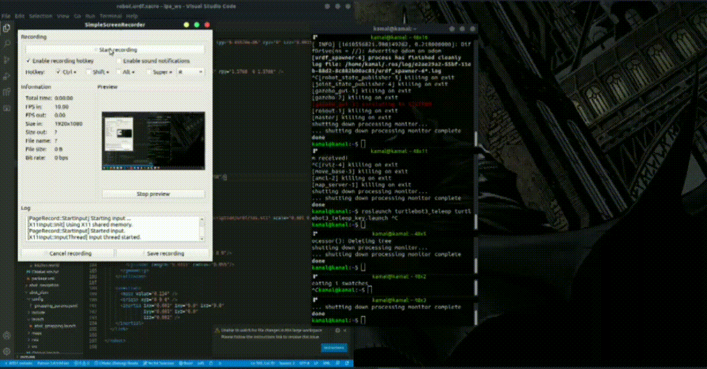
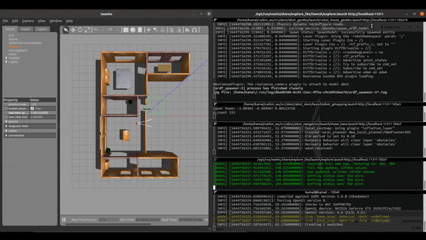
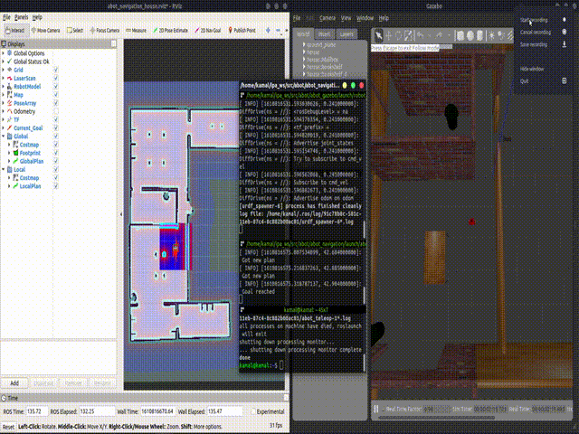
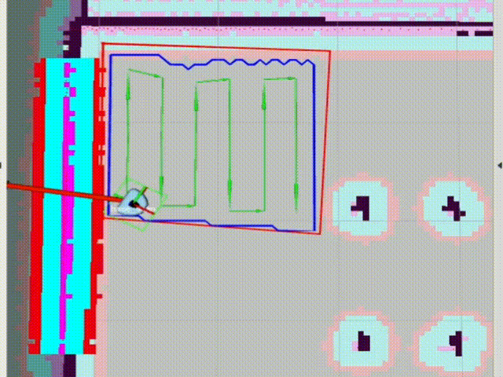
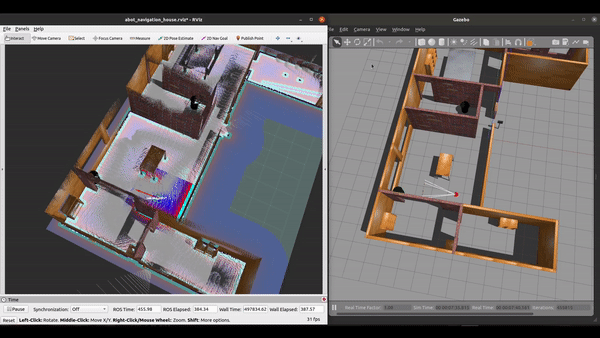

Abot: Home Automation Simulation
Project Overview
ABot is a differential drive mobile robot based on Robot Operating System (ROS), designed as a comprehensive home automation simulation platform for research and development of autonomous cleaning and maintenance robots. The project has been tested on Ubuntu 18.04 with ROS Melodic and Ubuntu 20.04 with ROS Noetic, providing a complete virtual environment for testing navigation algorithms, SLAM implementations, and coverage planning strategies using advanced computational geometry techniques.
Capabilities & Features

ABot 3D model with depth sensor analysis in Gazebo simulation
- ✅ Manual teleop control for direct robot operation
- ✅ SLAM with Gmapping using teleop and explore_lite
- ✅ Goal Point Navigation using dwa_local_planner and teb_local_planner
- ✅ Coverage Planning with Boustrophedon Decomposition
- ✅ Configured Behavior Tree for complex task management
- ✅ Intel RealSense D435 integration
- ✅ RTAB-Map for advanced SLAM capabilities
- 🔄 GPS integration (planned)
- 🔄 Manipulator arm addition (planned)
Installation & Setup
To run the ABot simulation in Gazebo, clone the package in your catkin workspace:
cd ~/catkin_ws/src
git clone https://github.com/KamalanathanN/abot.git
cd ~/catkin_ws
catkin_make
source devel/setup.bashLaunch ABot in Gazebo
roslaunch abot_gazebo robot_house_gazebo.launchCore Functionalities
1. SLAM with Gmapping
ABot supports simultaneous localization and mapping using gmapping algorithm with both manual teleop control and autonomous exploration.
roslaunch abot_slam abot_gmapping.launch
roslaunch abot_teleop abot_teleop_key.launch
Real-time SLAM mapping using gmapping algorithm
2. Autonomous Exploration with explore_lite
For autonomous map generation without manual intervention:
sudo apt install ros-noetic-explore-lite
roslaunch abot_slam abot_gmapping.launch
roslaunch abot_navigation move_base.launch
roslaunch explore_lite explore.launch
Autonomous exploration and mapping using explore_lite
3. Navigation System
The navigation system supports both DWA and TEB local planners. By default, it uses dwa_local_planner, but TEB can be enabled with the TEB:=true argument.
roslaunch abot_navigation abot_navigation.launch
Goal-based navigation with obstacle avoidance
4. Path Coverage with Boustrophedon Decomposition
Advanced coverage planning algorithm for systematic area coverage:
roslaunch abot_path_coverage abot_path_coverage.launch
Boustrophedon decomposition for complete area coverage
Behavior Tree Integration
ABot features a sophisticated behavior tree system for complex task management. The implementation includes goal point looping with interrupt capabilities for autonomous charging behavior. Future enhancements will include camera feedback actions and object detection behaviors.
Behavior tree execution with Groot monitoring interface
Runtime Behavior Tree Monitoring with Groot
Real-time visualization and monitoring of behavior tree execution:
rosrun groot Groot # select Monitor option and Start
roslaunch abot_behavior_tree goal_points_looping.launchTo provide interrupt commands:
rostopic pub /interrupt_event std_msgs/String "data: 'Charge_port'"RTAB-Map Integration
Advanced SLAM capabilities using RTAB-Map for robust mapping and localization in complex environments. The system integrates Intel RealSense D435 for enhanced depth perception.

RTAB-Map SLAM with RealSense D435 depth integration
Mapping Phase
roslaunch abot_rtabmap rtab_minimal.launch args:="--delete_db_on_start"Navigation with RTAB-Map
roslaunch abot_rtabmap rtab_minimal.launch localization:=true
roslaunch abot_navigation abot_navigation_rtabmap.launch TEB:=trueTechnical Implementation
- Differential drive mobile robot platform
- ROS-based modular architecture
- Gazebo simulation environment with realistic physics
- Multiple SLAM implementations (Gmapping, RTAB-Map)
- Advanced path planning algorithms (DWA, TEB)
- Behavior tree framework for complex task management
- Intel RealSense D435 sensor integration
- Coverage planning using computational geometry
Results & Applications
The ABot simulation platform has successfully demonstrated:
- Robust autonomous navigation in complex indoor environments
- Efficient coverage planning for cleaning applications
- Successful integration of multiple sensor modalities
- Advanced behavior tree implementation for task management
- Educational platform for robotics research and development
- Foundation for real-world autonomous system deployment